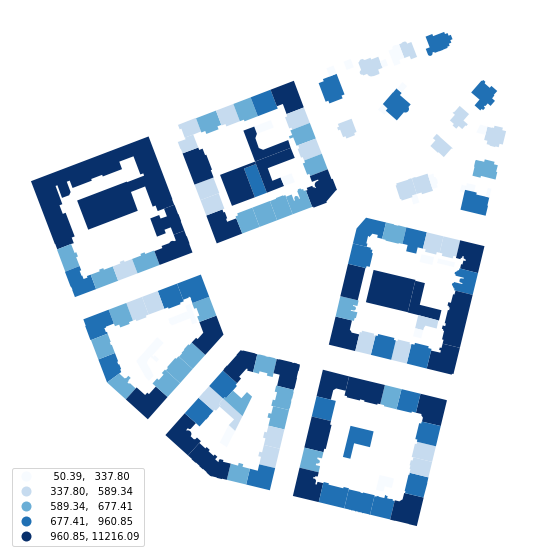
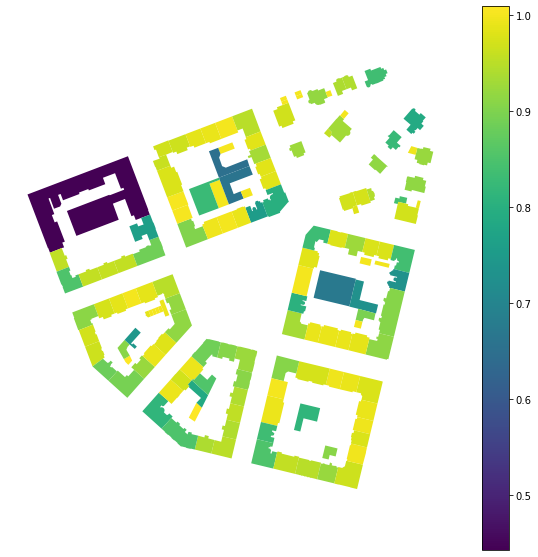
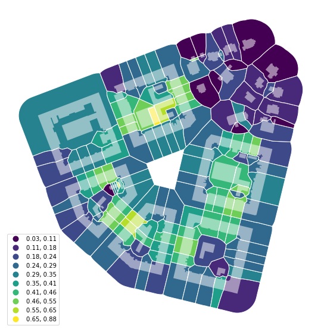
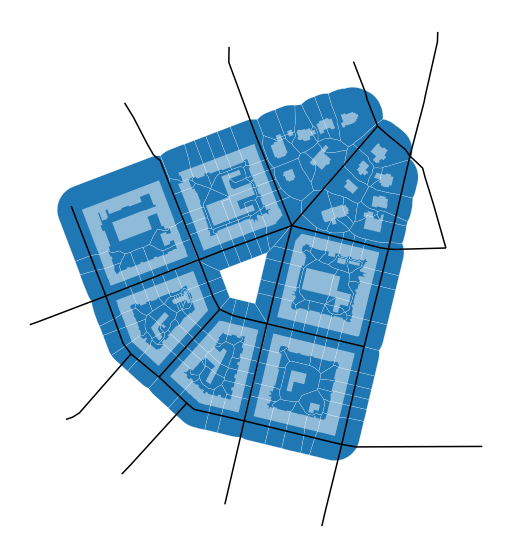
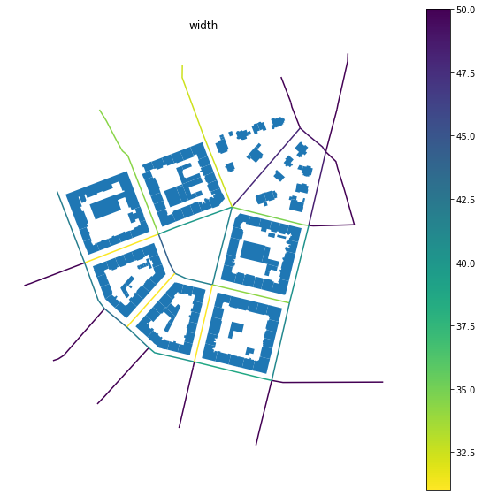
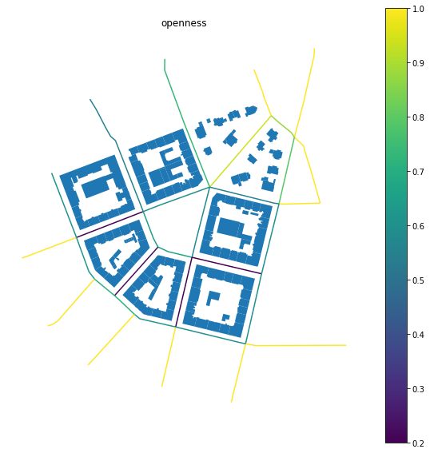
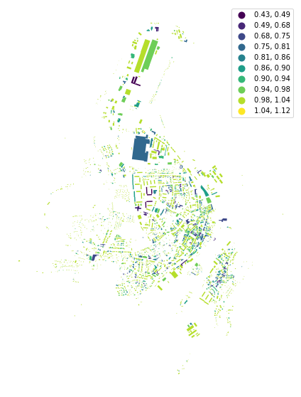

Note
Getting started#
An introduction to momepy#
Momepy is a library for quantitative analysis of urban form - urban morphometrics. It is built on top of GeoPandas, PySAL and networkX.
Some of the functionality that momepy offers:
Measuring dimensions of morphological elements, their parts, and aggregated structures.
Quantifying shapes of geometries representing a wide range of morphological features.
Capturing spatial distribution of elements of one kind as well as relationships between different kinds.
Computing density and other types of intensity characters.
Calculating diversity of various aspects of urban form.
Capturing connectivity of urban street networks
Generating relational elements of urban form (e.g. morphological tessellation)
Momepy aims to provide a wide range of tools for a systematic and exhaustive analysis of urban form. It can work with a wide range of elements, while focused on building footprints and street networks.
Installation#
Momepy can be easily installed using conda from conda-forge. For detailed installation instructions, please refer to the installation documentation.
conda install momepy -c conda-forge
Dependencies#
To run all examples in this notebook, you will need some optional dependencies. matplotlib, descartes and mapclassify (or pysal) for plotting (these are GeoPandas dependencies) and osmnx to download data from OpenStreetMap. You can install all using the following commands:
conda install matplotlib descartes osmnx -c conda-forge
pip install mapclassify
Simple examples#
Here are simple examples using embedded bubenec dataset (part of the Bubeneč neighborhood in Prague).
[1]:
import momepy
import geopandas as gpd
import matplotlib.pyplot as plt
Morphometric analysis using momepy usually starts with GeoPandas GeoDataFrame containing morphological elements. In this case, we will begin with buildings represented by their footprints.
We have imported momepy, geopandas to handle the spatial data, and matplotlib to get a bit more control over plotting. To load bubenec data, we need to get retrieve correct path using momepy.datasets.get_path("bubenec"). The dataset itself is a GeoPackage with more layers, and now we want buildings.
[2]:
buildings = gpd.read_file(momepy.datasets.get_path('bubenec'),
layer='buildings')
/Users/martin/Git/geopandas/geopandas/geodataframe.py:580: RuntimeWarning: Sequential read of iterator was interrupted. Resetting iterator. This can negatively impact the performance.
for feature in features_lst:
[3]:
f, ax = plt.subplots(figsize=(10, 10))
buildings.plot(ax=ax)
ax.set_axis_off()
plt.show()

Momepy uses classes for each measurable character, which stores the resulting values but also original input and all parameters used for the computation. The only exception is the graph module. To illustrate how momepy classes work, we can try to measure a few simple characters.
Area#
momepy.Area measures the area of polygon geometry. It is a simple wrapper around gdf.geoemtry.area, included in momepy for consistency. momepy.Area does not need any attributes apart from source GeoDataFrame.
[4]:
blg_area = momepy.Area(buildings)
buildings['area'] = blg_area.series
Tip: .series will give you resulting Pandas Series in most of the cases (unless there are more resulting Series).
[5]:
f, ax = plt.subplots(figsize=(10, 10))
buildings.plot('area', ax=ax, legend=True, scheme='quantiles', cmap='Blues',
legend_kwds={'loc': 'lower left'})
ax.set_axis_off()
plt.show()

Above, we have calculated the area of each building and then extracted resulting values (pandas.Series) to save them as a new column of buildings. You can also get original GeoDataFrame:
[6]:
blg_area.gdf.head()
[6]:
| uID | geometry | area | |
|---|---|---|---|
| 0 | 1 | POLYGON ((1603599.221 6464369.816, 1603602.984... | 728.557495 |
| 1 | 2 | POLYGON ((1603042.880 6464261.498, 1603038.961... | 11216.093578 |
| 2 | 3 | POLYGON ((1603044.650 6464178.035, 1603049.192... | 641.059515 |
| 3 | 4 | POLYGON ((1603036.557 6464141.467, 1603036.969... | 903.746689 |
| 4 | 5 | POLYGON ((1603082.387 6464142.022, 1603081.574... | 641.629131 |
Equivalent rectangular index#
momepy.EquivalentRectangularIndex is an example of a morphometric character capturing the shape of each object. It can be calculated in an analogical way as the area above:
[7]:
blg_ERI = momepy.EquivalentRectangularIndex(buildings)
To calculate the equivalent rectangular index, we need to know the area and perimeter of each polygon. While momepy can compute both automatically, we might want to save time passing already computed areas directly:
[8]:
blg_ERI = momepy.EquivalentRectangularIndex(buildings, areas='area')
buildings['eri'] = blg_ERI.series
[9]:
f, ax = plt.subplots(figsize=(10, 10))
buildings.plot('eri', ax=ax, legend=True)
ax.set_axis_off()
plt.show()

Apart from resulting values stored in blg_ERI.series we can also see all values used for computation, including perimeters we have not passed above.
[10]:
blg_ERI.areas.head()
[10]:
0 728.557495
1 11216.093578
2 641.059515
3 903.746689
4 641.629131
Name: area, dtype: float64
[11]:
blg_ERI.perimeters.head()
[11]:
0 137.186310
1 991.345770
2 107.488923
3 141.740042
4 107.158092
dtype: float64
Capturing relation between different elements#
Urban form is a complex entity that needs to be represented by multiple morphological elements, and we need to be able to describe the relationship between them. With the absence of plots for our bubenec case, we can use morphological tessellation as the smallest spatial division.
[12]:
tessellation = gpd.read_file(momepy.datasets.get_path('bubenec'),
layer='tessellation')
/Users/martin/Git/geopandas/geopandas/geodataframe.py:580: RuntimeWarning: Sequential read of iterator was interrupted. Resetting iterator. This can negatively impact the performance.
for feature in features_lst:
[13]:
f, ax = plt.subplots(figsize=(10, 10))
tessellation.plot(ax=ax, edgecolor='white')
buildings.plot(ax=ax, color='white', alpha=.5)
ax.set_axis_off()
plt.show()
Coverage area ratio#
Now we can calculate how big part of each tessellation cell is covered by a related building, using momepy.AreaRatio. Momepy classes usually accept any list-like object to be passed as values on top of a column name. Below we are passing Series to left_areas and column name to right_areas. Buildings have the same uID as related tessellation cells, which is used to link both together (see Data Structure).
[14]:
coverage = momepy.AreaRatio(tessellation, buildings, left_areas=tessellation.area,
right_areas='area', unique_id='uID')
tessellation['CAR'] = coverage.series
[15]:
f, ax = plt.subplots(figsize=(10, 10))
tessellation.plot('CAR', ax=ax, edgecolor='white', legend=True, scheme='NaturalBreaks', k=10, legend_kwds={'loc': 'lower left'})
buildings.plot(ax=ax, color='white', alpha=.5)
ax.set_axis_off()
plt.show()

Finally, to cover the last of the essential elements, we import the street network.
[16]:
streets = gpd.read_file(momepy.datasets.get_path('bubenec'),
layer='streets')
/Users/martin/Git/geopandas/geopandas/geodataframe.py:580: RuntimeWarning: Sequential read of iterator was interrupted. Resetting iterator. This can negatively impact the performance.
for feature in features_lst:
[17]:
f, ax = plt.subplots(figsize=(10, 10))
tessellation.plot(ax=ax, edgecolor='white', linewidth=0.2)
buildings.plot(ax=ax, color='white', alpha=.5)
streets.plot(ax=ax, color='black')
ax.set_axis_off()
plt.show()

Street profile#
momepy.StreetProfile captures the relations between the segments of the street network and buildings.
[18]:
profile = momepy.StreetProfile(streets, buildings)
/opt/miniconda3/envs/geo_dev/lib/python3.9/site-packages/numpy/lib/nanfunctions.py:1664: RuntimeWarning: Degrees of freedom <= 0 for slice.
var = nanvar(a, axis=axis, dtype=dtype, out=out, ddof=ddof,
We have now captured multiple characters of the street profile. As we did not specify building height (we do not know it for our data), we have widths (mean) - profile.w, standard deviation of widths (along the segment) - profile.wd, and the degree of openness - profile.o.
Note: StreetProfile measures several characters at the same time. Each of them is saved in its own Series, so .series would not work here.
[19]:
streets['width'] = profile.w
streets['openness'] = profile.o
[20]:
f, ax = plt.subplots(figsize=(10, 10))
buildings.plot(ax=ax)
streets.plot('width', ax=ax, legend=True, cmap='viridis_r')
ax.set_axis_off()
ax.set_title('width')
plt.show()

[21]:
f, ax = plt.subplots(figsize=(10, 10))
buildings.plot(ax=ax)
streets.plot('openness', ax=ax, legend=True)
ax.set_axis_off()
ax.set_title('openness')
plt.show()

Using OpenStreetMap data#
In some cases (based on the completeness of OSM), we can use OpenStreetMap data without the need to save them to file and read them via GeoPandas. We can use OSMnx to retrieve them directly. In this example, we will download the building footprint of Kahla in Germany and project it to projected CRS. Momepy expects that all GeoDataFrames have the same (projected) CRS.
[22]:
import osmnx as ox
gdf = ox.geometries.geometries_from_place('Kahla, Germany', tags={'building':True})
gdf_projected = ox.projection.project_gdf(gdf)
[23]:
f, ax = plt.subplots(figsize=(10, 10))
gdf_projected.plot(ax=ax)
ax.set_axis_off()
plt.show()

Now we are in the same situation as we were above, and we can start our morphometric analysis as illustrated on the equivalent rectangular index below.
[24]:
gdf_ERI = momepy.EquivalentRectangularIndex(gdf_projected)
gdf_projected['eri'] = gdf_ERI.series
[25]:
f, ax = plt.subplots(figsize=(10, 10))
gdf_projected.plot('eri', ax=ax, legend=True, scheme='NaturalBreaks', k=10)
ax.set_axis_off()
plt.show()

Next steps#
Now we have basic knowledge of what momepy is and how it works. It is time to install momepy (if you haven’t done so yet) and browse the rest of this user guide to see more examples. Once done, head to the API reference to see the full extent of characters momepy can capture and find those you need for your research.